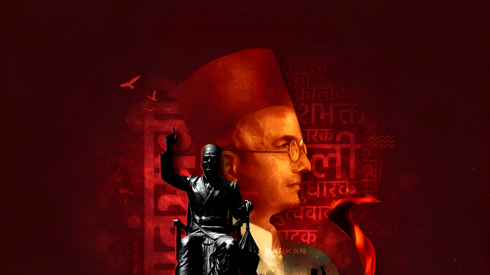
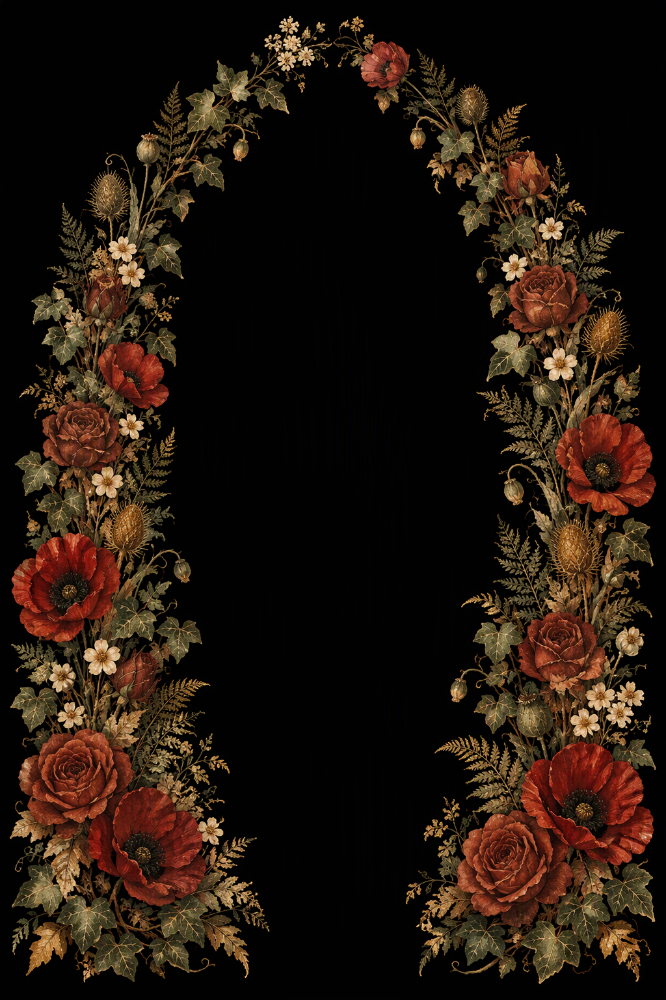
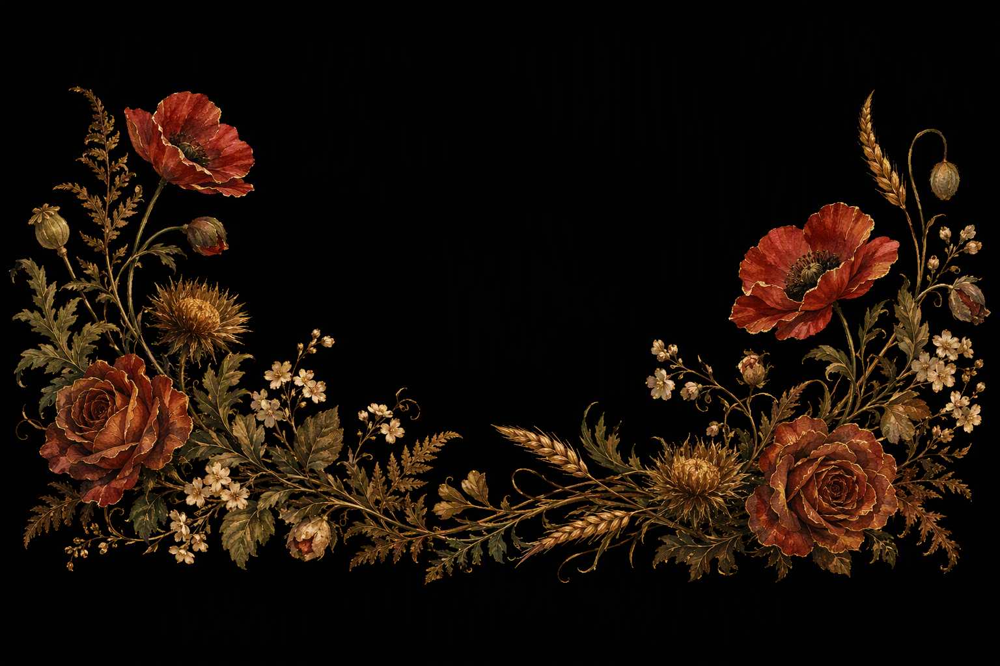

ग्रंथ ०१ · 1909
1857The Indian War
VS
A BOTANICAL TRIBUTE · १८८३ — १९६६
स्वातंत्र्यवीर सावरकर S A V A R K A R
कवी · क्रांतिकारक · कैदी — Poet. Revolutionary. Prisoner.
देशाच्या सीमा चरख्याच्या सुताने नाही,
तर तलवारीच्या टोकाने आखायच्या असतात!The borders of a nation are not drawn with the thread of the spinning wheel, but with the tip of the sword.
— स्वातंत्र्यवीर सावरकर


स्वातंत्र्यवीर · १८८३ — १९६६
I माणूस The Man
He wrote a war into being —
then paid for it with
twenty-seven years.
He was born in Bhagur, a village near Nashik, on 28 May 1883 — in a country still learning to say its own name aloud. By sixteen he had founded a secret society, Mitra Mela. By twenty he had sworn his life to Abhinav Bharat.
In London he read law at Gray's Inn and wrote The Indian War of Independence, 1857 — a book that turned a failed revolt into a scripture of freedom. It was banned before it could reach Indian shores. It was read anyway.
Arrested in 1910, he was carried across the black water to the Cellular Jail in the Andamans. He returned in 1921 unbroken, and spent the next four decades writing, arguing and remembering.
“काळापाणी — the black water that could not drown a flame.”
From this archive’s preface
- 27
- Years of imprisonment
- 10
- Years in the Cellular Jail
- 1
- Flame that would not go out
II जीवन The Life
Eleven passages,
one unbroken line.
A chronology of Vinayak Damodar Savarkar,
from the courtyard at Bhagur to the last flame in Bombay.
-
I
जन्म Birth
Born on 28 May in Bhagur, Nashik, to Damodar and Radhabai Savarkar.
-
II
मित्रमेळा The Secret Circle
Aged sixteen, he founds Mitra Mela, a society of young nationalists. Five years later it becomes Abhinav Bharat.
-
III
लंडन London
Sails to England to read law at Gray’s Inn; the freedom movement travels with him.
-
IV
पहिला ग्रंथ The First Book
Publishes The Indian War of Independence, 1857 abroad. The book is banned in India before it lands.
-
V
अटक The Arrest
Arrested in London in the Curzon Wyllie case and held in Brixton prison.
-
VI
काळापाणी Transportation
Sentenced to transportation for life; reaches the Cellular Jail in the Andamans.
-
VII
सुटका Return
Comes home after ten years on the islands; interned in Ratnagiri for more than a decade.
-
VIII
हिंदुत्व Hindutva
Publishes Hindutva: Who Is a Hindu? — an essay that will shape a century of argument.
-
IX
राजकारण Public Life
Steps into public politics and serves as president of the Hindu Mahasabha until 1943.
-
X
अभियोग The Trial
Arrested in the Gandhi assassination case; acquitted in 1949 for want of evidence.
-
XI
महाप्रयाण The Last Flame
Dies in Bombay on 26 February. The flame is handed on.
III ग्रंथ Works
A library
of the burning kind.
History, polemic, memoir and hymn —
the shelves of a man who wrote as he fought.
ग्रंथ ०२ · 1923
हिंदुत्वWho Is a Hindu?
VS
ग्रंथ ०३ · Andaman
माझी जन्मठेपMy Transportation for Life
VS
ग्रंथ ०४ · काळापाणी
Echoes
VS
Echoes
from Andaman
VS
ग्रंथ ०५ · 1963
Six Glorious
VS
Six Glorious
Epochs
VS
ग्रंथ ०६ · 1907
जयोस्तुतेJayostute
VSIV काळापाणी Kala Pani
Ten years in the shadow
of the gallows.
The Cellular Jail was built to erase men. Savarkar arrived in 1911. He ground oil at the kolhu, taught fellow prisoners in secret, and scratched poems onto his cell wall with thorns and coal.
The empire called it transportation for life. He treated it as a classroom of the soul.
- 1911
- Arrival at the islands
- 10
- Years in Cellular Jail
- 1
- Cell that became a library
“विजेच्या लहरींसारख्या, काळोखातून प्रकाशाकडे.”
Like currents of lightning — from darkness toward light.
A line from the prison years, paraphrased in this archive
V कवी The Poet
जयोस्तुते श्रीमहन्मंगले,
शिवास्पदे शुभदे।
Victory to Thee, O greatly auspicious one —
dweller in Shiva, giver of all good.
जयोस्तुते · Jayostute, 1907 — a hymn to the motherland
He wrote the motherland a lullaby and a war cry
in the same breath — and meant both.
VI वारसा Legacy
Three places hold
the ember still.
Cellular Jail Port Blair
काळापाणी · 1911—1921
The walls still carry the poems. The kolhu still turns in the memory of the islands.
Savarkar Smarak Bhagur
भगूर · जन्मस्थळ
The courtyard where a sixteen-year-old lit the first flame, kept as a memorial to that beginning.
Savarkar Sadan Mumbai
मुंबई · वास्तू
The Dadar study where the last pages were written and the last argument was made.
History will keep arguing about him.
The flame does not.